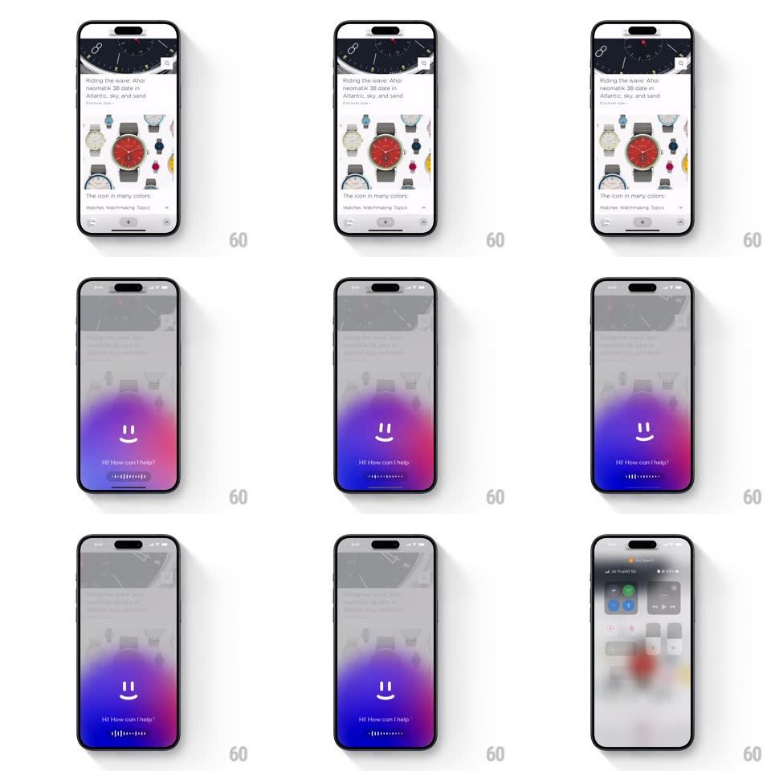

Media
Frame-by-frame

Rebuild this interaction 1:1: Arc Search's voice assistant overlay - the page dims and a vibrant purple gradient bubble blooms from the bottom with a smiley mascot and a live voice waveform.

Rebuild this interaction 1:1: Arc Search's voice assistant overlay - the page dims and a vibrant purple gradient bubble blooms from the bottom with a smiley mascot and a live voice waveform. ## Integration Integration: stack-agnostic spec - springs given as stiffness/damping, timed motions as duration + curve; map every value to your framework and animation library of choice. ## Scene A webpage dims and desaturates behind a gradient bubble that floods the lower screen - vivid purple/magenta, brightest at the bottom edge. Inside: a minimal smiley face (two eyes, a smile) and the greeting "Hi! How can I help?" above a row of audio waveform bars. ## Motion spec Pattern: gradient bloom with living mascot. - Trigger (long-press): the page dims to 35% and blurs ~8px over 300ms; the gradient bubble rises from the bottom edge like liquid (translateY +50% to 0 with a bulging top edge, 450ms, ease-out), its colors churning slowly (pink/purple blobs on 5s orbits). - The smiley draws on: eyes pop (two dots, scale 0 to 1, 150ms, 60ms apart), the smile strokes in (arc draw, 250ms); the mascot idles with a gentle bob (translateY +-4px, 2.8s loop) and an occasional blink (eyes scaleY to 0.1 and back, 120ms, every ~4s). - "Hi! How can I help?" fades up under the mascot (250ms, 8px rise). - The waveform bars animate with input level: ~14 vertical bars scaling from center (spring ~500/25 per bar), idle state a slow ripple traveling across the row (1.5s loop). - Dismiss (release/tap outside): bubble sinks and shrinks into the bottom bar (300ms, ease-in), the page brightens back. ## Calibration - The gradient is brightest at the very bottom and falls off upward - the mascot floats in the dimmer zone. - Waveform responds to real audio level; the idle ripple never stops entirely. ## Reduced motion Bubble fades in; mascot static; waveform replaced by a pulse dot. ## Don't miss - The mascot is just eyes and a smile - no outline face; it reads as a friendly void in the gradient. - Dismissal must feel like the bubble draining back down, not a fade-out.